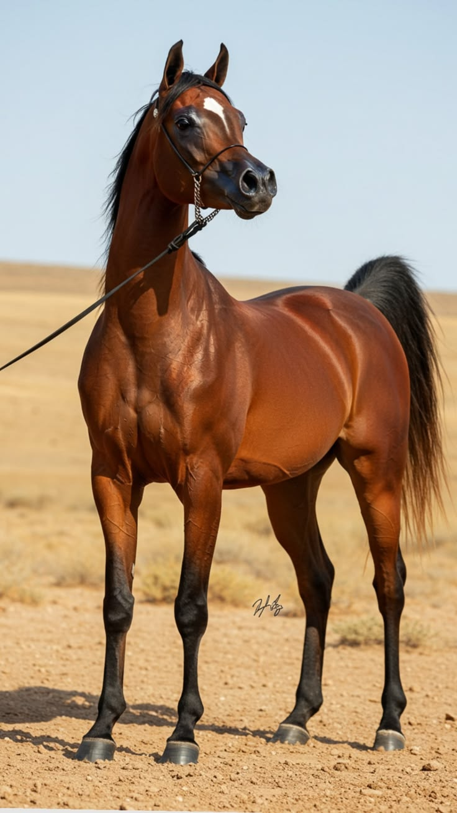

Introduction to the Arabian Horse
The Arabian horse is one of the oldest and most influential horse breeds in the world. It originated in the Arabian Peninsula, where it was developed by Bedouin tribes over many centuries. These horses were highly valued for their speed, strength, intelligence, and ability to survive in harsh desert conditions. They became trusted companions during travel, warfare, and daily life. Over time, Arabian horses spread to different parts of the world and influenced the development of many modern horse breeds.


Key Facts and Characteristics of Arabian Horses
- Origin : Arabian Peninsula, Middle East.
- Age : One of the oldest horse breeds in the world.
- Height :14.1–15.1hands.
- Weight : Approximately 360–450 kg.
- Colors : Gray, bay, black, and chestnut.
- Features : Dished face, large eyes, arched neck and high-carried tail.
- Temperament : Intelligent, loyal, energetic, and friendly.
- Special Abilities : Excellent endurance and stamina.
- Uses : Racing, endurance riding, shows, and recreation.
- Lifespan : Approximately25–30 years.
- Price : An Arabian horse typically costs between $5,000 and $20,000 on average,.